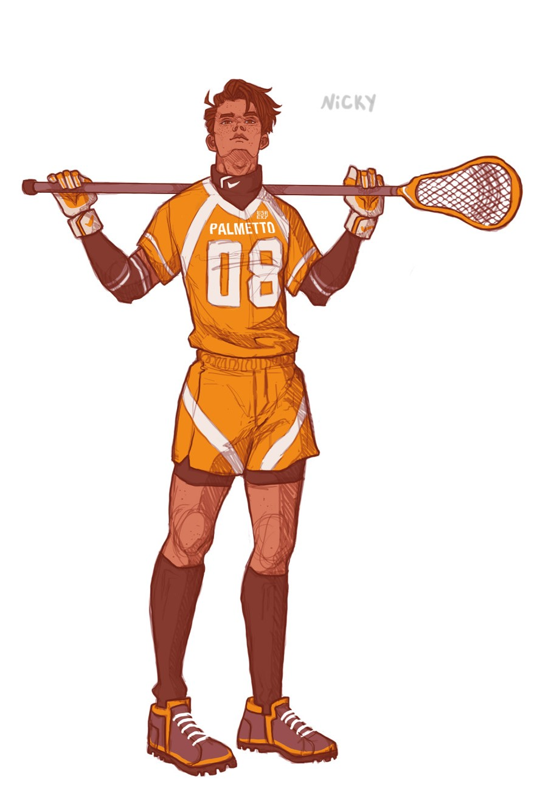

Nicky Hemmick
Nicky is the cousin of Andrew and Aaron. He is not on good terms with his parents, who refuse to accept his sexuality, and because of this he studied in Germany for a year. While he was there, he met Erik, who was a part of his 'host family.' He would eventually begin a commited relationship with Erik, which he continued even after he went back to America and started college.
- Contents
- Before The Foxes
- Appearance
- Character
- General
- The Twins
- The Foxes